Analyze Distributional Results
back to Fan's Dynamic Assets Repository Table of Content.
Contents
- FF_AZ_TEST_ANALYZE post solution simulation
- Default Parameter
- Array Parameters
- Default
- Parse Parameters 1
- Parse Parameters 2
- Cross-Simulate Model Along Parameters
- Specify Outcome Variables to Plot
- List graphing options for az and abz models, some also for akz models
- list graphing options only for akz models
- Store to cells
- Get Var Descs
- Graph Outcomes
- Loop over Subplots (different sets of Outcomes)
- Generate Graphs
function [tb_outcomes, support_map] = ff_az_test_analyze(varargin)
FF_AZ_TEST_ANALYZE post solution simulation
Simulate the model along various dimensions, and produce graphical outputs to show aggregate/distributional statistics.
@ar_it_plot_sets array integer array of which statistics graphs to generate, see line 128. Could add additional statistics to that conditional list.
@param st_simu_type string cross vs gridd simulation. cross: with (x,y), vary X fixing y, vary Y fixing x. grid: all (x,y) \in (X,Y)
- st_simu_type = 'c' for cross simulate, if 'c', then each array value of param_tstar_map container is simulated over one by one. So if there are two arrays associated with two keys in param_tstar_map with length N1 and N2, the total number of simulations equals to N1 + N2.
- st_simu_type = 'g' for grid simulate, if 'g', then all possible combinations of the arrays in param_tstar_map are used to create combinations of parameter values. So if there are two arrays with lengths N1 and N2, there will be N1*N2 number of simulations
- st_simu_type = 'r' for random simulate, if 'r', then should specify param_map('it_st_simu_type_g_seed') value. Only the minimum and the maximum values for each array in param_tstar_map matters. Based on these minimum and maximum, and also what is in param_map('it_st_simu_type_g_simun'). Random parameter values will be drawn.
@param it_size_type integer:
- it_size_type = 1 is quick grid
- it_size_type = 2 is standard grid
- it_size_type = 3 is denser grid
@param cl_st_param_keys cell string cell array container parameters that we are simulating over
@param param_map container parameter container
@param support_map container support container
@param param_tstar_map container map of arrays with keys that are parameter keys. This could be specified outside with array values to override defaults here.
@param param_desc_map container map of strings for each parameter key.
@param tb_outcomes table table of simulation outcomes for various statistics for each set of parameters. Columns are statistics, rows are outcome variables, groups of rows are different simulations.
@include
@seealso
- SPEED savings only overall benchmark speed testing: fsi_az_ds_vecsv_speed
- PREFERENCE savings only preference testing: fsi_az_ds_vecsv_pref
- PREFERENCE savings only preference testing cross: fsi_az_ds_vecsv_pref_cross
- SHOCK savings only shock testing: fsi_az_ds_vecsv_shock
- SHOCK savings only shock testing cross: fsi_az_ds_vecsv_shock_cross
- PRICE savings only wage and interest rate testing cross: adjust wage and savings rate fsi_az_ds_vecsv_price_cross
Default Parameter
ar_it_plot_sets = [1,2,4,5,6,7]; it_param_set = 9; [param_map, support_map] = ffs_az_set_default_param(it_param_set); support_map('bl_replacefile') = false; support_map('bl_graph_onebyones') = true; support_map('bl_display_graph_stats') = true;
Array Parameters
initiate empty map
st_simu_type = 'c'; % if false, simu full grid it_size_type = 2; cl_st_param_keys = {'fl_crra', 'fl_beta'}; param_tstar_map = containers.Map('KeyType','char', 'ValueType','any'); it_simu_vec_len = 5; param_tstar_map('fl_crra') = linspace(1, 5, it_simu_vec_len); param_tstar_map('fl_beta') = linspace(0.87, 0.97, it_simu_vec_len); param_desc_map = containers.Map('KeyType','char', 'ValueType','any'); param_desc_map('fl_crra') = {'CRRA'}; param_desc_map('fl_beta') = {'Discount'};
Default
default_params = {ar_it_plot_sets ...
st_simu_type it_size_type cl_st_param_keys ...
param_map support_map param_tstar_map param_desc_map};
Parse Parameters 1
override default set above if any parameters are updated
params_len = length(varargin);
[default_params{1:params_len}] = varargin{:};
ar_it_plot_sets = default_params{1};
st_simu_type = default_params{2};
it_size_type = default_params{3};
cl_st_param_keys = default_params{4};
param_map = [param_map; default_params{5}];
support_map = [support_map; default_params{6}];
param_tstar_map = [param_tstar_map; default_params{7}];
param_desc_map = [param_desc_map; default_params{8}];
Parse Parameters 2
params_group = values(param_map, {'st_model'});
[st_model] = params_group{:};
params_group = values(support_map, {'bl_graph_onebyones', 'bl_display_graph_stats'});
[bl_graph_onebyones, bl_display_graph_stats] = params_group{:};
Cross-Simulate Model Along Parameters
[tb_outcomes, support_map, param_desc_map] = ff_az_test_gen( ... st_simu_type, it_size_type, cl_st_param_keys, ... param_map, support_map, param_tstar_map, param_desc_map);
----------------------------------------
----------------------------------------
xxxxxxxxxxxxxxxxxxxxxxxxxxxxxxxxxxxxxxxx
xxxxxxxxxxxxxxxxxxxxxxxxxxxxxxxxxxxxxxxx
Begin: Show all key and value pairs from container
CONTAINER NAME: SUPPORT_MAP
----------------------------------------
Map with properties:
Count: 48
KeyType: char
ValueType: any
xxxxxxxxxxxxxxxxxxxxxxxxxxxxxxxxxxxxxxxx
xxxxxxxxxxxxxxxxxxxxxxxxxxxxxxxxxxxxxxxx
----------------------------------------
----------------------------------------
pos = 1 ; key = bl_display ; val = false
pos = 2 ; key = bl_display_defparam ; val = false
pos = 3 ; key = bl_display_dist ; val = false
pos = 4 ; key = bl_display_final ; val = false
pos = 5 ; key = bl_display_final_dist ; val = true
pos = 6 ; key = bl_display_final_dist_detail ; val = false
pos = 7 ; key = bl_display_funcgrids ; val = false
pos = 8 ; key = bl_display_graph_stats ; val = true
pos = 9 ; key = bl_display_simu_stats ; val = true
pos = 10 ; key = bl_graph ; val = true
pos = 11 ; key = bl_graph_coh_t_coh ; val = false
pos = 12 ; key = bl_graph_funcgrids ; val = false
pos = 13 ; key = bl_graph_onebyones ; val = true
pos = 14 ; key = bl_graph_pol_lvl ; val = false
pos = 15 ; key = bl_graph_pol_pct ; val = false
pos = 16 ; key = bl_graph_val ; val = false
pos = 17 ; key = bl_img_save ; val = false
pos = 18 ; key = bl_mat ; val = false
pos = 19 ; key = bl_mat_test ; val = true
pos = 20 ; key = bl_post ; val = true
pos = 21 ; key = bl_profile ; val = false
pos = 22 ; key = bl_profile_dist ; val = false
pos = 23 ; key = bl_replacefile ; val = false
pos = 24 ; key = bl_time ; val = false
pos = 25 ; key = bl_timer ; val = true
pos = 26 ; key = it_display_every ; val = 20
pos = 27 ; key = it_display_final_colmax ; val = 12
pos = 28 ; key = it_display_final_rowmax ; val = 100
pos = 29 ; key = it_display_summmat_colmax ; val = 5
pos = 30 ; key = it_display_summmat_rowmax ; val = 5
pos = 31 ; key = st_img_name_main ; val = _default
pos = 32 ; key = st_img_path ; val = C:/Users/fan/CodeDynaAsset//m_az//solve/img/
pos = 33 ; key = st_img_prefix ; val =
pos = 34 ; key = st_img_suffix ; val = _p9.png
pos = 35 ; key = st_mat_name_main ; val = _default
pos = 36 ; key = st_mat_path ; val = C:/Users/fan/CodeDynaAsset//m_az//solve/mat/
pos = 37 ; key = st_mat_prefix ; val =
pos = 38 ; key = st_mat_suffix ; val = _p9
pos = 39 ; key = st_mat_test_name_main ; val = r
pos = 40 ; key = st_mat_test_path ; val = C:/Users/fan/CodeDynaAsset//m_az//test/ff_az_ds_vecsv/mat/
pos = 41 ; key = st_mat_test_prefix ; val =
pos = 42 ; key = st_mat_test_suffix ; val = _g12_cc_t2l10
pos = 43 ; key = st_matimg_path_root ; val = C:/Users/fan/CodeDynaAsset//m_az/
pos = 44 ; key = st_profile_name_main ; val = _default
pos = 45 ; key = st_profile_path ; val = C:/Users/fan/CodeDynaAsset//m_az//solve/profile/
pos = 46 ; key = st_profile_prefix ; val =
pos = 47 ; key = st_profile_suffix ; val = _p9
pos = 48 ; key = st_title_prefix ; val =
----------------------------------------
xxxxxxxxxxxxxxxxxxxxxxxxxxxxxxxxxxxxxxxx
Scalars in Container and Sizes and Basic Statistics
xxxxxxxxxxxxxxxxxxxxxxxxxxxxxxxxxxxxxxxx
i idx value
__ ___ _____
bl_display 1 1 0
bl_display_defparam 2 2 0
bl_display_dist 3 3 0
bl_display_final 4 4 0
bl_display_final_dist 5 5 1
bl_display_final_dist_detail 6 6 0
bl_display_funcgrids 7 7 0
bl_display_graph_stats 8 8 1
bl_display_simu_stats 9 9 1
bl_graph 10 10 1
bl_graph_coh_t_coh 11 11 0
bl_graph_funcgrids 12 12 0
bl_graph_onebyones 13 13 1
bl_graph_pol_lvl 14 14 0
bl_graph_pol_pct 15 15 0
bl_graph_val 16 16 0
bl_img_save 17 17 0
bl_mat 18 18 0
bl_mat_test 19 19 1
bl_post 20 20 1
bl_profile 21 21 0
bl_profile_dist 22 22 0
bl_replacefile 23 23 0
bl_time 24 24 0
bl_timer 25 25 1
it_display_every 26 26 20
it_display_final_colmax 27 27 12
it_display_final_rowmax 28 28 100
it_display_summmat_colmax 29 29 5
it_display_summmat_rowmax 30 30 5
----------------------------------------
xxxxxxxxxxxxxxxxxxxxxxxxxxxxxxxxxxxxxxxx
Strings in Container and Sizes and Basic Statistics
xxxxxxxxxxxxxxxxxxxxxxxxxxxxxxxxxxxxxxxx
i idx
__ ___
st_img_name_main 1 31
st_img_path 2 32
st_img_prefix 3 33
st_img_suffix 4 34
st_mat_name_main 5 35
st_mat_path 6 36
st_mat_prefix 7 37
st_mat_suffix 8 38
st_mat_test_name_main 9 39
st_mat_test_path 10 40
st_mat_test_prefix 11 41
st_mat_test_suffix 12 42
st_matimg_path_root 13 43
st_profile_name_main 14 44
st_profile_path 15 45
st_profile_prefix 16 46
st_profile_suffix 17 47
st_title_prefix 18 48
----------------------------------------
----------------------------------------
xxxxxxxxxxxxxxxxxxxxxxxxxxxxxxxxxxxxxxxx
xxxxxxxxxxxxxxxxxxxxxxxxxxxxxxxxxxxxxxxx
Begin: Show all key and value pairs from container
CONTAINER NAME: PARAM_MAP
----------------------------------------
Map with properties:
Count: 29
KeyType: char
ValueType: any
xxxxxxxxxxxxxxxxxxxxxxxxxxxxxxxxxxxxxxxx
xxxxxxxxxxxxxxxxxxxxxxxxxxxxxxxxxxxxxxxx
----------------------------------------
----------------------------------------
pos = 1 ; key = ar_param_keys_idx ;rown= 1 ,coln= 2
ar_param_keys_idx :mu= 1.5 ,sd= 0.70711 ,min= 1 ,max= 2
zi_1_c1 zi_2_c2
_______ _______
zi_1_r1 1 2
pos = 2 ; key = bl_loglin ; val = false
pos = 3 ; key = cl_st_param_keys ; val = fl_crra
pos = 4 ; key = fl_a_max ; val = 50
pos = 5 ; key = fl_a_min ; val = 0
pos = 6 ; key = fl_b_bd ; val = 0
pos = 7 ; key = fl_beta ; val = 0.94
pos = 8 ; key = fl_crra ; val = 1.5
pos = 9 ; key = fl_loglin_threshold ; val = 1
pos = 10 ; key = fl_nan_replace ; val = -9999
pos = 11 ; key = fl_r_save ; val = 0.025
pos = 12 ; key = fl_tol_dist ; val = 1e-05
pos = 13 ; key = fl_tol_pol ; val = 1e-05
pos = 14 ; key = fl_tol_val ; val = 1e-05
pos = 15 ; key = fl_w ; val = 1.28
pos = 16 ; key = fl_z_mu ; val = 0
pos = 17 ; key = fl_z_rho ; val = 0.8
pos = 18 ; key = fl_z_sig ; val = 0.2
pos = 19 ; key = it_a_n ; val = 750
pos = 20 ; key = it_maxiter_dist ; val = 1000
pos = 21 ; key = it_maxiter_val ; val = 1000
pos = 22 ; key = it_size_type ; val = 2
pos = 23 ; key = it_st_simu_type_g_seed ; val = 123
pos = 24 ; key = it_st_simu_type_g_simun ; val = 20
pos = 25 ; key = it_tol_pol_nochange ; val = 25
pos = 26 ; key = it_trans_power_dist ; val = 1000
pos = 27 ; key = it_z_n ; val = 15
pos = 28 ; key = st_analytical_stationary_type ; val = eigenvector
pos = 29 ; key = st_model ; val = az
----------------------------------------
xxxxxxxxxxxxxxxxxxxxxxxxxxxxxxxxxxxxxxxx
Matrix in Container and Sizes and Basic Statistics
xxxxxxxxxxxxxxxxxxxxxxxxxxxxxxxxxxxxxxxx
i idx rowN colN mean std min max
_ ___ ____ ____ ____ _______ ___ ___
ar_param_keys_idx 1 1 1 2 1.5 0.70711 1 2
----------------------------------------
xxxxxxxxxxxxxxxxxxxxxxxxxxxxxxxxxxxxxxxx
Scalars in Container and Sizes and Basic Statistics
xxxxxxxxxxxxxxxxxxxxxxxxxxxxxxxxxxxxxxxx
i idx value
__ ___ _____
bl_loglin 1 2 0
fl_a_max 2 4 50
fl_a_min 3 5 0
fl_b_bd 4 6 0
fl_beta 5 7 0.94
fl_crra 6 8 1.5
fl_loglin_threshold 7 9 1
fl_nan_replace 8 10 -9999
fl_r_save 9 11 0.025
fl_tol_dist 10 12 1e-05
fl_tol_pol 11 13 1e-05
fl_tol_val 12 14 1e-05
fl_w 13 15 1.28
fl_z_mu 14 16 0
fl_z_rho 15 17 0.8
fl_z_sig 16 18 0.2
it_a_n 17 19 750
it_maxiter_dist 18 20 1000
it_maxiter_val 19 21 1000
it_size_type 20 22 2
it_st_simu_type_g_seed 21 23 123
it_st_simu_type_g_simun 22 24 20
it_tol_pol_nochange 23 25 25
it_trans_power_dist 24 26 1000
it_z_n 25 27 15
----------------------------------------
xxxxxxxxxxxxxxxxxxxxxxxxxxxxxxxxxxxxxxxx
Strings in Container and Sizes and Basic Statistics
xxxxxxxxxxxxxxxxxxxxxxxxxxxxxxxxxxxxxxxx
i idx
_ ___
cl_st_param_keys 1 3
st_analytical_stationary_type 2 28
st_model 3 29
----------------------------------------
----------------------------------------
xxxxxxxxxxxxxxxxxxxxxxxxxxxxxxxxxxxxxxxx
xxxxxxxxxxxxxxxxxxxxxxxxxxxxxxxxxxxxxxxx
Begin: Show all key and value pairs from container
CONTAINER NAME: PARAM_TSTAR_MAP
----------------------------------------
Map with properties:
Count: 16
KeyType: char
ValueType: any
xxxxxxxxxxxxxxxxxxxxxxxxxxxxxxxxxxxxxxxx
xxxxxxxxxxxxxxxxxxxxxxxxxxxxxxxxxxxxxxxx
----------------------------------------
----------------------------------------
pos = 1 ; key = fl_a_max ;rown= 1 ,coln= 5
fl_a_max :mu= 65 ,sd= 11.8585 ,min= 50 ,max= 80
zi_1_c1 zi_2_c2 zi_3_c3 zi_4_c4 zi_5_c5
_______ _______ _______ _______ _______
zi_1_r1 50 57.5 65 72.5 80
pos = 2 ; key = fl_b_bd ;rown= 1 ,coln= 5
fl_b_bd :mu= -12.5 ,sd= 5.9293 ,min= -20 ,max= -5
zi_1_c1 zi_2_c2 zi_3_c3 zi_4_c4 zi_5_c5
_______ _______ _______ _______ _______
zi_1_r1 -20 -16.25 -12.5 -8.75 -5
pos = 3 ; key = fl_beta ;rown= 1 ,coln= 5
fl_beta :mu= 0.92 ,sd= 0.039528 ,min= 0.87 ,max= 0.97
zi_1_c1 zi_2_c2 zi_3_c3 zi_4_c4 zi_5_c5
_______ _______ _______ _______ _______
zi_1_r1 0.87 0.895 0.92 0.945 0.97
pos = 4 ; key = fl_c_min ;rown= 1 ,coln= 5
fl_c_min :mu= 0.0155 ,sd= 0.011463 ,min= 0.001 ,max= 0.03
zi_1_c1 zi_2_c2 zi_3_c3 zi_4_c4 zi_5_c5
_______ _______ _______ _______ _______
zi_1_r1 0.03 0.02275 0.0155 0.00825 0.001
pos = 5 ; key = fl_crra ;rown= 1 ,coln= 5
fl_crra :mu= 3 ,sd= 1.5811 ,min= 1 ,max= 5
zi_1_c1 zi_2_c2 zi_3_c3 zi_4_c4 zi_5_c5
_______ _______ _______ _______ _______
zi_1_r1 1 2 3 4 5
pos = 6 ; key = fl_r_save ;rown= 1 ,coln= 5
fl_r_save :mu= 0.025 ,sd= 0.011859 ,min= 0.01 ,max= 0.04
zi_1_c1 zi_2_c2 zi_3_c3 zi_4_c4 zi_5_c5
_______ _______ _______ _______ _______
zi_1_r1 0.01 0.0175 0.025 0.0325 0.04
pos = 7 ; key = fl_w ;rown= 1 ,coln= 5
fl_w :mu= 1.25 ,sd= 0.11859 ,min= 1.1 ,max= 1.4
zi_1_c1 zi_2_c2 zi_3_c3 zi_4_c4 zi_5_c5
_______ _______ _______ _______ _______
zi_1_r1 1.1 1.175 1.25 1.325 1.4
pos = 8 ; key = fl_z_r_borr_max ;rown= 1 ,coln= 5
fl_z_r_borr_max :mu= 0.1225 ,sd= 0.021741 ,min= 0.095 ,max= 0.15
zi_1_c1 zi_2_c2 zi_3_c3 zi_4_c4 zi_5_c5
_______ _______ _______ _______ _______
zi_1_r1 0.095 0.10875 0.1225 0.13625 0.15
pos = 9 ; key = fl_z_r_borr_n ;rown= 1 ,coln= 6
fl_z_r_borr_n :mu= 15 ,sd= 7.4833 ,min= 5 ,max= 25
zi_1_c1 zi_2_c2 zi_3_c3 zi_4_c4 zi_5_c5 zi_6_c6
_______ _______ _______ _______ _______ _______
zi_1_r1 5 9 13 17 21 25
pos = 10 ; key = fl_z_r_borr_poiss_mean ;rown= 1 ,coln= 5
fl_z_r_borr_poiss_mean :mu= 12.5 ,sd= 5.9293 ,min= 5 ,max= 20
zi_1_c1 zi_2_c2 zi_3_c3 zi_4_c4 zi_5_c5
_______ _______ _______ _______ _______
zi_1_r1 5 8.75 12.5 16.25 20
pos = 11 ; key = fl_z_rho ;rown= 1 ,coln= 5
fl_z_rho :mu= 0.495 ,sd= 0.39133 ,min= 0 ,max= 0.99
zi_1_c1 zi_2_c2 zi_3_c3 zi_4_c4 zi_5_c5
_______ _______ _______ _______ _______
zi_1_r1 0 0.2475 0.495 0.7425 0.99
pos = 12 ; key = fl_z_sig ;rown= 1 ,coln= 5
fl_z_sig :mu= 0.255 ,sd= 0.19369 ,min= 0.01 ,max= 0.5
zi_1_c1 zi_2_c2 zi_3_c3 zi_4_c4 zi_5_c5
_______ _______ _______ _______ _______
zi_1_r1 0.01 0.1325 0.255 0.3775 0.5
pos = 13 ; key = fl_z_wage_rho ;rown= 1 ,coln= 5
fl_z_wage_rho :mu= 0.495 ,sd= 0.39133 ,min= 0 ,max= 0.99
zi_1_c1 zi_2_c2 zi_3_c3 zi_4_c4 zi_5_c5
_______ _______ _______ _______ _______
zi_1_r1 0 0.2475 0.495 0.7425 0.99
pos = 14 ; key = fl_z_wage_sig ;rown= 1 ,coln= 5
fl_z_wage_sig :mu= 0.255 ,sd= 0.19369 ,min= 0.01 ,max= 0.5
zi_1_c1 zi_2_c2 zi_3_c3 zi_4_c4 zi_5_c5
_______ _______ _______ _______ _______
zi_1_r1 0.01 0.1325 0.255 0.3775 0.5
pos = 15 ; key = it_a_n ;rown= 1 ,coln= 5
it_a_n :mu= 1300 ,sd= 948.6833 ,min= 100 ,max= 2500
zi_1_c1 zi_2_c2 zi_3_c3 zi_4_c4 zi_5_c5
_______ _______ _______ _______ _______
zi_1_r1 100 700 1300 1900 2500
pos = 16 ; key = it_z_n ;rown= 1 ,coln= 5
it_z_n :mu= 15 ,sd= 7.9057 ,min= 5 ,max= 25
zi_1_c1 zi_2_c2 zi_3_c3 zi_4_c4 zi_5_c5
_______ _______ _______ _______ _______
zi_1_r1 5 10 15 20 25
----------------------------------------
xxxxxxxxxxxxxxxxxxxxxxxxxxxxxxxxxxxxxxxx
Matrix in Container and Sizes and Basic Statistics
xxxxxxxxxxxxxxxxxxxxxxxxxxxxxxxxxxxxxxxx
i idx rowN colN mean std min max
__ ___ ____ ____ ______ ________ _____ ____
fl_a_max 1 1 1 5 65 11.859 50 80
fl_b_bd 2 2 1 5 -12.5 5.9293 -20 -5
fl_beta 3 3 1 5 0.92 0.039528 0.87 0.97
fl_c_min 4 4 1 5 0.0155 0.011463 0.001 0.03
fl_crra 5 5 1 5 3 1.5811 1 5
fl_r_save 6 6 1 5 0.025 0.011859 0.01 0.04
fl_w 7 7 1 5 1.25 0.11859 1.1 1.4
fl_z_r_borr_max 8 8 1 5 0.1225 0.021741 0.095 0.15
fl_z_r_borr_n 9 9 1 6 15 7.4833 5 25
fl_z_r_borr_poiss_mean 10 10 1 5 12.5 5.9293 5 20
fl_z_rho 11 11 1 5 0.495 0.39133 0 0.99
fl_z_sig 12 12 1 5 0.255 0.19369 0.01 0.5
fl_z_wage_rho 13 13 1 5 0.495 0.39133 0 0.99
fl_z_wage_sig 14 14 1 5 0.255 0.19369 0.01 0.5
it_a_n 15 15 1 5 1300 948.68 100 2500
it_z_n 16 16 1 5 15 7.9057 5 25
Specify Outcome Variables to Plot
it_plot_n = length(ar_it_plot_sets);
[it_plot_rows, it_plot_cols] = deal(round(it_plot_n/3), 3);
cl_ar_st_variablenames = cell([it_plot_n,1]);
cl_ar_st_legend = cell([it_plot_n,1]);
cl_ar_st_colnames = cell([it_plot_n,1]);
cl_st_title = cell([it_plot_n,1]);
cl_st_ytitle = cell([it_plot_n,1]);
it_plot_ctr = 0;
for it_plot = ar_it_plot_sets
it_plot_ctr = it_plot_ctr + 1;
List graphing options for az and abz models, some also for akz models
if (it_plot == 1) ar_st_colnames_plot = {'p1', 'p25', 'p50', 'mean', 'p75', 'p99'}; ar_st_variablenames_plot = repmat({'cl_mt_pol_c'}, [1, length(ar_st_colnames_plot)]); ar_st_legend_plot = ar_st_colnames_plot; st_title = 'Consumption Percentiles'; st_ytitle = 'C Distribution'; elseif (it_plot == 2) ar_st_colnames_plot = {'p1', 'p25', 'p50', 'mean', 'p75', 'p99'}; ar_st_variablenames_plot = repmat({'cl_mt_pol_a'}, [1, length(ar_st_colnames_plot)]); ar_st_legend_plot = ar_st_colnames_plot; st_title = 'Savings Percentiles'; st_ytitle = 'A Distribution'; elseif (it_plot == 3) ar_st_colnames_plot = {'mean', 'sd'}; ar_st_variablenames_plot = repmat({'cl_mt_pol_c'}, [1, length(ar_st_colnames_plot)]); ar_st_legend_plot = ar_st_colnames_plot; st_title = 'Consumption Mean and SD'; st_ytitle = 'C Mean and SD'; elseif (it_plot == 4) ar_st_colnames_plot = {'mean', 'sd'}; ar_st_variablenames_plot = repmat({'cl_mt_pol_a'}, [1, length(ar_st_colnames_plot)]); ar_st_legend_plot = ar_st_colnames_plot; st_title = 'Savings Mean and SD'; st_ytitle = 'A Mean and SD'; elseif (it_plot == 5) ar_st_colnames_plot = {'sd'}; ar_st_variablenames_plot = repmat({'cl_mt_pol_c'}, [1, length(ar_st_colnames_plot)]); ar_st_legend_plot = ar_st_colnames_plot; st_title = 'Consumption Standard Deviation'; st_ytitle = 'Standard Deviation'; elseif (it_plot == 6) ar_st_colnames_plot = {'sd'}; ar_st_variablenames_plot = repmat({'cl_mt_pol_a'}, [1, length(ar_st_colnames_plot)]); ar_st_legend_plot = ar_st_colnames_plot; st_title = 'Savings Standard Deviation'; st_ytitle = 'Standard Deviation'; elseif (it_plot == 7) ar_st_variablenames_plot = {'cl_mt_coh', 'cl_mt_pol_a', 'cl_mt_pol_c'}; ar_st_legend_plot = {'coh=wealth', 'savings', 'consumption'}; ar_st_colnames_plot = repmat({'mean'}, [1, length(ar_st_variablenames_plot)]); st_title = 'Aggregate Outcomes (wealth, savings, consumption)'; st_ytitle = 'Aggregate Levels'; elseif (it_plot == 8) ar_st_variablenames_plot = {'cl_mt_coh', 'cl_mt_pol_a', 'cl_mt_pol_c'}; ar_st_legend_plot = {'coh=wealth', 'savings', 'consumption'}; ar_st_colnames_plot = repmat({'coefofvar'}, [1, length(ar_st_variablenames_plot)]); st_title = 'Coef of Variation (wealth, savings, consumption)'; st_ytitle = 'Coefficient of Variation (SD/Mean)'; elseif (it_plot == 9) ar_st_variablenames_plot = {'cl_mt_coh', 'cl_mt_pol_a', 'cl_mt_pol_c'}; ar_st_legend_plot = {'coh=wealth', 'savings', 'consumption'}; ar_st_colnames_plot = repmat({'fl_cor_cl_mt_pol_c'}, [1, length(ar_st_variablenames_plot)]); st_title = 'Correlation with Consumption'; st_ytitle = 'Correlation Coefficient'; elseif (it_plot == 10) ar_st_variablenames_plot = {'cl_mt_pol_a', 'cl_mt_pol_c'}; ar_st_legend_plot = {'savings', 'consumption'}; ar_st_colnames_plot = repmat({'pYisMINY'}, [1, length(ar_st_variablenames_plot)]); st_title = 'Default Fraction'; st_ytitle = 'Default Fraction'; end
list graphing options only for akz models
if (it_plot == 101) ar_st_colnames_plot = {'p1', 'p25', 'p50', 'mean', 'p75', 'p99'}; ar_st_variablenames_plot = repmat({'cl_mt_pol_k'}, [1, length(ar_st_colnames_plot)]); ar_st_legend_plot = ar_st_colnames_plot; st_title = 'Risky Capital Percentiles'; st_ytitle = 'K Distribution'; elseif (it_plot == 102) ar_st_colnames_plot = {'mean', 'sd'}; ar_st_variablenames_plot = repmat({'cl_mt_pol_k'}, [1, length(ar_st_colnames_plot)]); ar_st_legend_plot = ar_st_colnames_plot; st_title = 'Risky Capital Mean and SD'; st_ytitle = 'K Mean and SD'; elseif (it_plot == 103) ar_st_colnames_plot = {'sd'}; ar_st_variablenames_plot = repmat({'cl_mt_pol_k'}, [1, length(ar_st_colnames_plot)]); ar_st_legend_plot = ar_st_colnames_plot; st_title = 'Risky Capital Standard Deviation'; st_ytitle = 'Standard Deviation'; elseif (it_plot == 104) ar_st_variablenames_plot = {'cl_mt_coh', 'cl_mt_pol_a', 'cl_mt_pol_k', 'cl_mt_pol_c'}; ar_st_legend_plot = {'coh=wealth', 'savings', 'risky k', 'consumption'}; ar_st_colnames_plot = repmat({'mean'}, [1, length(ar_st_variablenames_plot)]); st_title = 'Aggregate Outcomes (wealth, a, k, consumption)'; st_ytitle = 'Aggregate Levels'; elseif (it_plot == 105) ar_st_variablenames_plot = {'cl_mt_coh', 'cl_mt_pol_a', 'cl_mt_pol_k', 'cl_mt_pol_c'}; ar_st_legend_plot = {'coh=wealth', 'savings', 'risky k', 'consumption'}; ar_st_colnames_plot = repmat({'coefofvar'}, [1, length(ar_st_variablenames_plot)]); st_title = 'Coef of Variation (wealth, a, k, consumption)'; st_ytitle = 'Coefficient of Variation (SD/Mean)'; elseif (it_plot == 106) ar_st_variablenames_plot = {'cl_mt_coh', 'cl_mt_pol_a', 'cl_mt_pol_k', 'cl_mt_pol_c'}; ar_st_legend_plot = {'coh=wealth', 'savings', 'risky k', 'consumption'}; ar_st_colnames_plot = repmat({'fl_cor_cl_mt_pol_c'}, [1, length(ar_st_variablenames_plot)]); st_title = 'Correlation with Consumption'; st_ytitle = 'Correlation Coefficient'; end
Store to cells
cl_ar_st_variablenames{it_plot_ctr} = ar_st_variablenames_plot;
cl_ar_st_legend{it_plot_ctr} = ar_st_legend_plot;
cl_ar_st_colnames{it_plot_ctr} = ar_st_colnames_plot;
cl_st_title{it_plot_ctr} = st_title;
cl_st_ytitle{it_plot_ctr} = st_ytitle;
end
Get Var Descs
cl_st_param_desc = values(param_desc_map, cl_st_param_keys);
cl_st_param_desc = cellfun(@(m) m{1}, cl_st_param_desc, 'UniformOutput', false);
Graph Outcomes
close all; for it_pcombi_ctr = 1:length(cl_st_param_keys)
st_param_key = cl_st_param_keys{it_pcombi_ctr};
st_param_desc = cl_st_param_desc(it_pcombi_ctr);
if (~bl_graph_onebyones)
figure('PaperPosition', [0 0 it_plot_cols*7 it_plot_rows*4]);
else
end
% get data
if (strcmp(st_simu_type, 'c'))
tb_cur_data = tb_outcomes(strcmp(tb_outcomes.var_param_key, st_param_key), :);
elseif (ismember(st_simu_type, ["g", "r"]))
tb_cur_data = tb_outcomes;
end
st_x_label = st_param_desc;
Loop over Subplots (different sets of Outcomes)
for it_plot=1:1:it_plot_n
% Get x variable and label cl_legend = cl_ar_st_legend{it_plot}; ar_st_variablenames_plot = cl_ar_st_variablenames{it_plot}; ar_st_colnames_plot = cl_ar_st_colnames{it_plot}; st_title = cl_st_title{it_plot}; st_ytitle = cl_st_ytitle{it_plot}; if (bl_display_graph_stats) disp(['------------------------']) disp(['xxxxx ' st_title ' xxxxx']) disp(['xxxxx ' st_ytitle ' xxxxx']) disp(['------------------------']) tb_graph_data = tb_cur_data(:, [{st_param_key}, ar_st_colnames_plot]); if (size(tb_graph_data,1) >= 25) disp(head(tb_graph_data, 13)); disp(tail(tb_graph_data, 13)); else disp(tb_graph_data); end end
------------------------
xxxxx Consumption Percentiles xxxxx
xxxxx C Distribution xxxxx
------------------------
fl_crra p1 p25 p50 mean p75 p99
_______ ________ _______ ________ _______ _______ ______
cl_mt_pol_a_p1v1 1 0 0 0.066756 0.39061 0.46729 3.3378
cl_mt_coh_p1v1 1 0.59175 1.0479 1.3944 1.6804 2.0102 5.4955
cl_mt_pol_c_p1v1 1 0.59175 1.0479 1.2789 1.2898 1.5468 2.2175
cl_mt_pol_a_p1v2 2 0 0.13351 0.80107 1.341 1.9359 7.2096
cl_mt_coh_p1v2 2 0.59175 1.2772 2.0971 2.6545 3.4471 9.2454
cl_mt_pol_c_p1v2 2 0.59175 1.1182 1.3039 1.3135 1.5229 2.0753
cl_mt_pol_a_p1v3 3 0 0.66756 1.7356 2.4357 3.4713 10.481
cl_mt_coh_p1v3 3 0.66017 1.8138 3.1006 3.7766 5.0209 12.488
cl_mt_pol_c_p1v3 3 0.65149 1.1437 1.3515 1.3409 1.5451 2.0387
cl_mt_pol_a_p1v4 4 0 1.3351 2.8705 3.6456 5.1402 13.551
cl_mt_coh_p1v4 4 0.75104 2.5532 4.2682 5.0168 6.6827 15.602
cl_mt_pol_c_p1v4 4 0.68262 1.1763 1.3732 1.3711 1.5497 2.0408
cl_mt_pol_a_p1v5 5 0.066756 2.1362 4.1389 4.9436 6.8758 16.622
cl_mt_coh_p1v5 5 0.88789 3.3876 5.5612 6.3472 8.4421 18.681
cl_mt_pol_c_p1v5 5 0.78744 1.2297 1.3957 1.4036 1.5796 2.052
------------------------
xxxxx Savings Percentiles xxxxx
xxxxx A Distribution xxxxx
------------------------
fl_crra p1 p25 p50 mean p75 p99
_______ ________ _______ ________ _______ _______ ______
cl_mt_pol_a_p1v1 1 0 0 0.066756 0.39061 0.46729 3.3378
cl_mt_coh_p1v1 1 0.59175 1.0479 1.3944 1.6804 2.0102 5.4955
cl_mt_pol_c_p1v1 1 0.59175 1.0479 1.2789 1.2898 1.5468 2.2175
cl_mt_pol_a_p1v2 2 0 0.13351 0.80107 1.341 1.9359 7.2096
cl_mt_coh_p1v2 2 0.59175 1.2772 2.0971 2.6545 3.4471 9.2454
cl_mt_pol_c_p1v2 2 0.59175 1.1182 1.3039 1.3135 1.5229 2.0753
cl_mt_pol_a_p1v3 3 0 0.66756 1.7356 2.4357 3.4713 10.481
cl_mt_coh_p1v3 3 0.66017 1.8138 3.1006 3.7766 5.0209 12.488
cl_mt_pol_c_p1v3 3 0.65149 1.1437 1.3515 1.3409 1.5451 2.0387
cl_mt_pol_a_p1v4 4 0 1.3351 2.8705 3.6456 5.1402 13.551
cl_mt_coh_p1v4 4 0.75104 2.5532 4.2682 5.0168 6.6827 15.602
cl_mt_pol_c_p1v4 4 0.68262 1.1763 1.3732 1.3711 1.5497 2.0408
cl_mt_pol_a_p1v5 5 0.066756 2.1362 4.1389 4.9436 6.8758 16.622
cl_mt_coh_p1v5 5 0.88789 3.3876 5.5612 6.3472 8.4421 18.681
cl_mt_pol_c_p1v5 5 0.78744 1.2297 1.3957 1.4036 1.5796 2.052
------------------------
xxxxx Savings Mean and SD xxxxx
xxxxx A Mean and SD xxxxx
------------------------
fl_crra mean sd
_______ _______ _______
cl_mt_pol_a_p1v1 1 0.39061 0.70074
cl_mt_coh_p1v1 1 1.6804 1.0129
cl_mt_pol_c_p1v1 1 1.2898 0.37696
cl_mt_pol_a_p1v2 2 1.341 1.6059
cl_mt_coh_p1v2 2 2.6545 1.8815
cl_mt_pol_c_p1v2 2 1.3135 0.3224
cl_mt_pol_a_p1v3 3 2.4357 2.3673
cl_mt_coh_p1v3 3 3.7766 2.6281
cl_mt_pol_c_p1v3 3 1.3409 0.29467
cl_mt_pol_a_p1v4 4 3.6456 3.0477
cl_mt_coh_p1v4 4 5.0168 3.3019
cl_mt_pol_c_p1v4 4 1.3711 0.2794
cl_mt_pol_a_p1v5 5 4.9436 3.69
cl_mt_coh_p1v5 5 6.3472 3.9417
cl_mt_pol_c_p1v5 5 1.4036 0.27131
------------------------
xxxxx Consumption Standard Deviation xxxxx
xxxxx Standard Deviation xxxxx
------------------------
fl_crra sd
_______ _______
cl_mt_pol_a_p1v1 1 0.70074
cl_mt_coh_p1v1 1 1.0129
cl_mt_pol_c_p1v1 1 0.37696
cl_mt_pol_a_p1v2 2 1.6059
cl_mt_coh_p1v2 2 1.8815
cl_mt_pol_c_p1v2 2 0.3224
cl_mt_pol_a_p1v3 3 2.3673
cl_mt_coh_p1v3 3 2.6281
cl_mt_pol_c_p1v3 3 0.29467
cl_mt_pol_a_p1v4 4 3.0477
cl_mt_coh_p1v4 4 3.3019
cl_mt_pol_c_p1v4 4 0.2794
cl_mt_pol_a_p1v5 5 3.69
cl_mt_coh_p1v5 5 3.9417
cl_mt_pol_c_p1v5 5 0.27131
------------------------
xxxxx Savings Standard Deviation xxxxx
xxxxx Standard Deviation xxxxx
------------------------
fl_crra sd
_______ _______
cl_mt_pol_a_p1v1 1 0.70074
cl_mt_coh_p1v1 1 1.0129
cl_mt_pol_c_p1v1 1 0.37696
cl_mt_pol_a_p1v2 2 1.6059
cl_mt_coh_p1v2 2 1.8815
cl_mt_pol_c_p1v2 2 0.3224
cl_mt_pol_a_p1v3 3 2.3673
cl_mt_coh_p1v3 3 2.6281
cl_mt_pol_c_p1v3 3 0.29467
cl_mt_pol_a_p1v4 4 3.0477
cl_mt_coh_p1v4 4 3.3019
cl_mt_pol_c_p1v4 4 0.2794
cl_mt_pol_a_p1v5 5 3.69
cl_mt_coh_p1v5 5 3.9417
cl_mt_pol_c_p1v5 5 0.27131
------------------------
xxxxx Aggregate Outcomes (wealth, savings, consumption) xxxxx
xxxxx Aggregate Levels xxxxx
------------------------
fl_crra mean mean_1 mean_2
_______ _______ _______ _______
cl_mt_pol_a_p1v1 1 0.39061 0.39061 0.39061
cl_mt_coh_p1v1 1 1.6804 1.6804 1.6804
cl_mt_pol_c_p1v1 1 1.2898 1.2898 1.2898
cl_mt_pol_a_p1v2 2 1.341 1.341 1.341
cl_mt_coh_p1v2 2 2.6545 2.6545 2.6545
cl_mt_pol_c_p1v2 2 1.3135 1.3135 1.3135
cl_mt_pol_a_p1v3 3 2.4357 2.4357 2.4357
cl_mt_coh_p1v3 3 3.7766 3.7766 3.7766
cl_mt_pol_c_p1v3 3 1.3409 1.3409 1.3409
cl_mt_pol_a_p1v4 4 3.6456 3.6456 3.6456
cl_mt_coh_p1v4 4 5.0168 5.0168 5.0168
cl_mt_pol_c_p1v4 4 1.3711 1.3711 1.3711
cl_mt_pol_a_p1v5 5 4.9436 4.9436 4.9436
cl_mt_coh_p1v5 5 6.3472 6.3472 6.3472
cl_mt_pol_c_p1v5 5 1.4036 1.4036 1.4036
------------------------
xxxxx Consumption Percentiles xxxxx
xxxxx C Distribution xxxxx
------------------------
fl_beta p1 p25 p50 mean p75 p99
_______ _______ ________ ________ ________ ________ ______
cl_mt_pol_a_p2v1 0.87 0 0 0 0.083735 0.066756 1.2016
cl_mt_coh_p2v1 0.87 0.59175 0.90837 1.2088 1.3658 1.6085 3.564
cl_mt_pol_c_p2v1 0.87 0.59175 0.90837 1.2088 1.2821 1.6085 2.3992
cl_mt_pol_a_p2v2 0.895 0 0 0 0.1837 0.20027 2.0027
cl_mt_coh_p2v2 0.895 0.59175 0.97679 1.2088 1.4683 1.7365 4.2617
cl_mt_pol_c_p2v2 0.895 0.59175 0.97679 1.2088 1.2846 1.5418 2.3294
cl_mt_pol_a_p2v3 0.92 0 0 0.066756 0.40859 0.53405 3.3378
cl_mt_coh_p2v3 0.92 0.59175 1.0479 1.3944 1.6988 2.0608 5.5087
cl_mt_pol_c_p2v3 0.92 0.59175 1.0479 1.2789 1.2902 1.5485 2.2209
cl_mt_pol_a_p2v4 0.945 0 0.066756 0.53405 1.0308 1.4686 6.2083
cl_mt_coh_p2v4 0.945 0.59175 1.1847 1.8246 2.3366 2.977 8.2303
cl_mt_pol_c_p2v4 0.945 0.59175 1.0495 1.3293 1.3058 1.5301 2.0854
cl_mt_pol_a_p2v5 0.97 0 1.8024 4.2056 5.4081 7.8104 20.961
cl_mt_coh_p2v5 0.97 0.68262 3.0295 5.6323 6.8233 9.393 23.012
cl_mt_pol_c_p2v5 0.97 0.68262 1.2422 1.4183 1.4152 1.5952 2.0683
------------------------
xxxxx Savings Percentiles xxxxx
xxxxx A Distribution xxxxx
------------------------
fl_beta p1 p25 p50 mean p75 p99
_______ _______ ________ ________ ________ ________ ______
cl_mt_pol_a_p2v1 0.87 0 0 0 0.083735 0.066756 1.2016
cl_mt_coh_p2v1 0.87 0.59175 0.90837 1.2088 1.3658 1.6085 3.564
cl_mt_pol_c_p2v1 0.87 0.59175 0.90837 1.2088 1.2821 1.6085 2.3992
cl_mt_pol_a_p2v2 0.895 0 0 0 0.1837 0.20027 2.0027
cl_mt_coh_p2v2 0.895 0.59175 0.97679 1.2088 1.4683 1.7365 4.2617
cl_mt_pol_c_p2v2 0.895 0.59175 0.97679 1.2088 1.2846 1.5418 2.3294
cl_mt_pol_a_p2v3 0.92 0 0 0.066756 0.40859 0.53405 3.3378
cl_mt_coh_p2v3 0.92 0.59175 1.0479 1.3944 1.6988 2.0608 5.5087
cl_mt_pol_c_p2v3 0.92 0.59175 1.0479 1.2789 1.2902 1.5485 2.2209
cl_mt_pol_a_p2v4 0.945 0 0.066756 0.53405 1.0308 1.4686 6.2083
cl_mt_coh_p2v4 0.945 0.59175 1.1847 1.8246 2.3366 2.977 8.2303
cl_mt_pol_c_p2v4 0.945 0.59175 1.0495 1.3293 1.3058 1.5301 2.0854
cl_mt_pol_a_p2v5 0.97 0 1.8024 4.2056 5.4081 7.8104 20.961
cl_mt_coh_p2v5 0.97 0.68262 3.0295 5.6323 6.8233 9.393 23.012
cl_mt_pol_c_p2v5 0.97 0.68262 1.2422 1.4183 1.4152 1.5952 2.0683
------------------------
xxxxx Savings Mean and SD xxxxx
xxxxx A Mean and SD xxxxx
------------------------
fl_beta mean sd
_______ ________ _______
cl_mt_pol_a_p2v1 0.87 0.083735 0.23518
cl_mt_coh_p2v1 0.87 1.3658 0.6001
cl_mt_pol_c_p2v1 0.87 1.2821 0.41818
cl_mt_pol_a_p2v2 0.895 0.1837 0.40215
cl_mt_coh_p2v2 0.895 1.4683 0.74402
cl_mt_pol_c_p2v2 0.895 1.2846 0.40112
cl_mt_pol_a_p2v3 0.92 0.40859 0.7045
cl_mt_coh_p2v3 0.92 1.6988 1.0188
cl_mt_pol_c_p2v3 0.92 1.2902 0.37555
cl_mt_pol_a_p2v4 0.945 1.0308 1.3631
cl_mt_coh_p2v4 0.945 2.3366 1.6448
cl_mt_pol_c_p2v4 0.945 1.3058 0.33496
cl_mt_pol_a_p2v5 0.97 5.4081 4.7673
cl_mt_coh_p2v5 0.97 6.8233 5.0167
cl_mt_pol_c_p2v5 0.97 1.4152 0.27424
------------------------
xxxxx Consumption Standard Deviation xxxxx
xxxxx Standard Deviation xxxxx
------------------------
fl_beta sd
_______ _______
cl_mt_pol_a_p2v1 0.87 0.23518
cl_mt_coh_p2v1 0.87 0.6001
cl_mt_pol_c_p2v1 0.87 0.41818
cl_mt_pol_a_p2v2 0.895 0.40215
cl_mt_coh_p2v2 0.895 0.74402
cl_mt_pol_c_p2v2 0.895 0.40112
cl_mt_pol_a_p2v3 0.92 0.7045
cl_mt_coh_p2v3 0.92 1.0188
cl_mt_pol_c_p2v3 0.92 0.37555
cl_mt_pol_a_p2v4 0.945 1.3631
cl_mt_coh_p2v4 0.945 1.6448
cl_mt_pol_c_p2v4 0.945 0.33496
cl_mt_pol_a_p2v5 0.97 4.7673
cl_mt_coh_p2v5 0.97 5.0167
cl_mt_pol_c_p2v5 0.97 0.27424
------------------------
xxxxx Savings Standard Deviation xxxxx
xxxxx Standard Deviation xxxxx
------------------------
fl_beta sd
_______ _______
cl_mt_pol_a_p2v1 0.87 0.23518
cl_mt_coh_p2v1 0.87 0.6001
cl_mt_pol_c_p2v1 0.87 0.41818
cl_mt_pol_a_p2v2 0.895 0.40215
cl_mt_coh_p2v2 0.895 0.74402
cl_mt_pol_c_p2v2 0.895 0.40112
cl_mt_pol_a_p2v3 0.92 0.7045
cl_mt_coh_p2v3 0.92 1.0188
cl_mt_pol_c_p2v3 0.92 0.37555
cl_mt_pol_a_p2v4 0.945 1.3631
cl_mt_coh_p2v4 0.945 1.6448
cl_mt_pol_c_p2v4 0.945 0.33496
cl_mt_pol_a_p2v5 0.97 4.7673
cl_mt_coh_p2v5 0.97 5.0167
cl_mt_pol_c_p2v5 0.97 0.27424
------------------------
xxxxx Aggregate Outcomes (wealth, savings, consumption) xxxxx
xxxxx Aggregate Levels xxxxx
------------------------
fl_beta mean mean_1 mean_2
_______ ________ ________ ________
cl_mt_pol_a_p2v1 0.87 0.083735 0.083735 0.083735
cl_mt_coh_p2v1 0.87 1.3658 1.3658 1.3658
cl_mt_pol_c_p2v1 0.87 1.2821 1.2821 1.2821
cl_mt_pol_a_p2v2 0.895 0.1837 0.1837 0.1837
cl_mt_coh_p2v2 0.895 1.4683 1.4683 1.4683
cl_mt_pol_c_p2v2 0.895 1.2846 1.2846 1.2846
cl_mt_pol_a_p2v3 0.92 0.40859 0.40859 0.40859
cl_mt_coh_p2v3 0.92 1.6988 1.6988 1.6988
cl_mt_pol_c_p2v3 0.92 1.2902 1.2902 1.2902
cl_mt_pol_a_p2v4 0.945 1.0308 1.0308 1.0308
cl_mt_coh_p2v4 0.945 2.3366 2.3366 2.3366
cl_mt_pol_c_p2v4 0.945 1.3058 1.3058 1.3058
cl_mt_pol_a_p2v5 0.97 5.4081 5.4081 5.4081
cl_mt_coh_p2v5 0.97 6.8233 6.8233 6.8233
cl_mt_pol_c_p2v5 0.97 1.4152 1.4152 1.4152
Generate Graphs
if (bl_graph_onebyones) figure('PaperPosition', [0 0 7 4]); else subplot(it_plot_rows,it_plot_cols,it_plot); end hold on; st_legend_loc = 'southeast'; blue = [57 106 177]./255; red = [204 37 41]./255; black = [83 81 84]./255; green = [62 150 81]./255; brown = [146 36 40]./255; purple = [107 76 154]./255; cl_colors = {blue, red, black, ... green, brown, purple}; cl_scatter_shapes = {'s','x','o','d','p','*'}; cl_linestyle = {'-','-','-','-','-','-'}; it_sca_bs = 3; cl_scatter_csizes = {10*it_sca_bs, 10*it_sca_bs, 10*it_sca_bs, 10*it_sca_bs, 10*it_sca_bs, 10*it_sca_bs}; it_line_bs = 2; cl_line_csizes = {1*it_line_bs, 1*it_line_bs, 1*it_line_bs, 1*it_line_bs, 1*it_line_bs, 1*it_line_bs}; it_graph_counter = 0; ls_chart = []; for it_fig = 1:length(cl_ar_st_variablenames{it_plot}) % Counter it_graph_counter = it_graph_counter + 1; % Color and Size etc it_csize = cl_scatter_csizes{it_fig}; ar_color = cl_colors{it_fig}; st_shape = cl_scatter_shapes{it_fig}; st_lnsty = cl_linestyle{it_fig}; st_lnwth = cl_line_csizes{it_fig}; % Access Y Outcomes ar_cur_rows = strcmp(tb_cur_data.variablenames, ar_st_variablenames_plot(it_fig)); st_cur_stat_col = ar_st_colnames_plot{it_fig}; % Access X and Y Values mt_graph_data = tb_cur_data(ar_cur_rows, {st_param_key, st_cur_stat_col}); % Access Y Values ar_y = real(mt_graph_data{:, st_cur_stat_col}); % Access X Values ar_x = real(mt_graph_data{:, st_param_key}); % Plot Scatter ls_chart(it_graph_counter) = scatter(ar_x', ar_y', it_csize, ar_color, st_shape); if (strcmp(st_simu_type, 'c')) % plot line do not include in legend line = plot(ar_x, ar_y); line.HandleVisibility = 'off'; line.Color = ar_color; line.LineStyle = st_lnsty; line.HandleVisibility = 'off'; line.LineWidth = st_lnwth; elseif (ismember(st_simu_type, ["g", "r"])) end cl_legend{it_graph_counter} = cl_legend{it_fig}; end legend(ls_chart, cl_legend, 'Location', st_legend_loc, 'color', 'none'); % 9. Titling etc grid on; title(strrep(st_title, '_', '\_')); ylabel(strrep(st_ytitle, '_', '\_')); st_xlabel = strrep(st_x_label, '_', '\_'); if (strcmp(st_simu_type, 'c')) xlabel(st_xlabel); elseif (ismember(st_simu_type, ["g"])) st_xlabel_randvars = string(['full grid of: ' strrep(strjoin(cl_st_param_desc, ' and '), '_', '\_')]); xlabel({st_xlabel{1} st_xlabel_randvars}); elseif (ismember(st_simu_type, ["r"])) st_xlabel_randvars = string(['random vary by: ' strrep(strjoin(cl_st_param_desc, ' and '), '_', '\_')]); xlabel({st_xlabel{1} st_xlabel_randvars}); end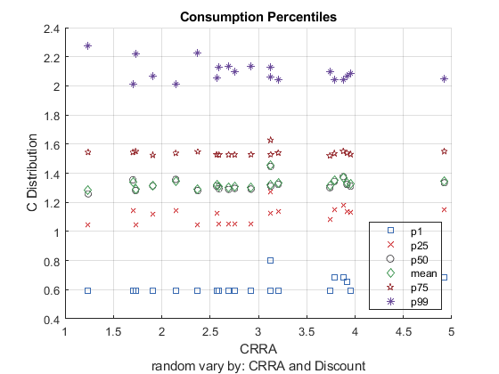
 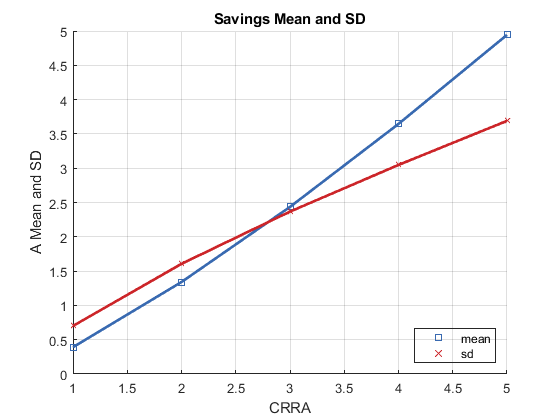
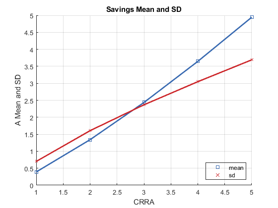 
 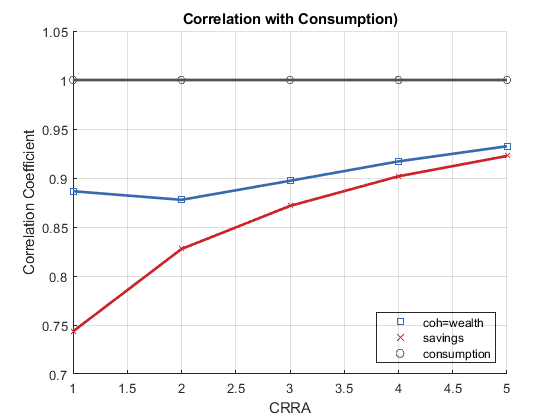 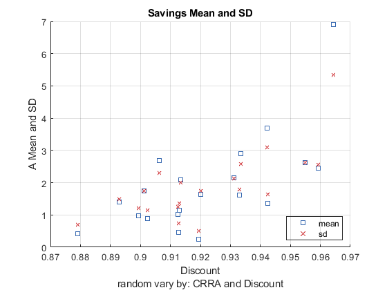
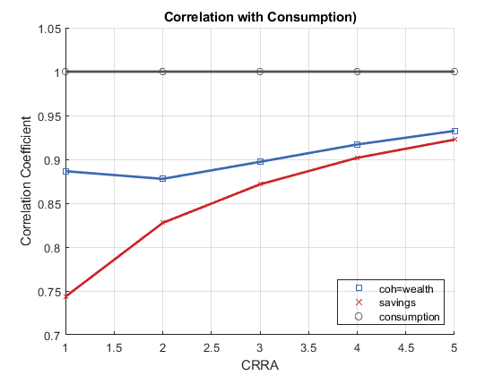 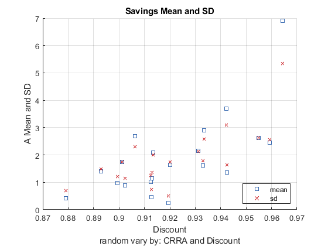  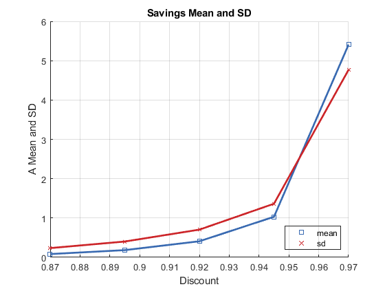 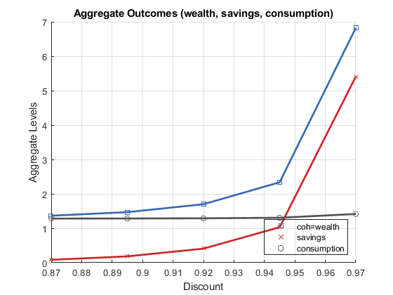 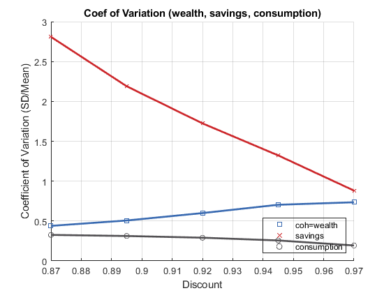 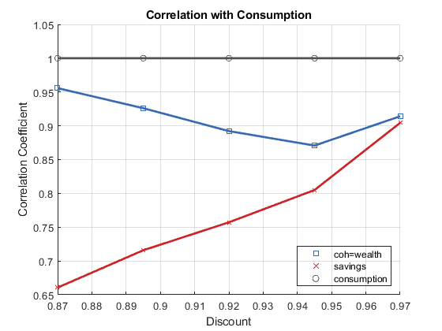
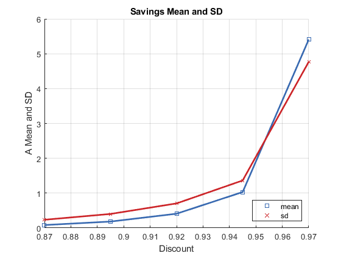 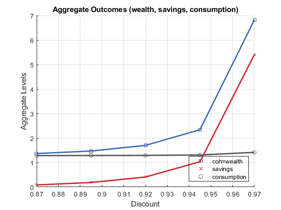 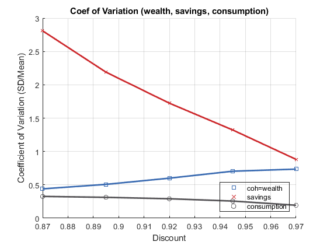 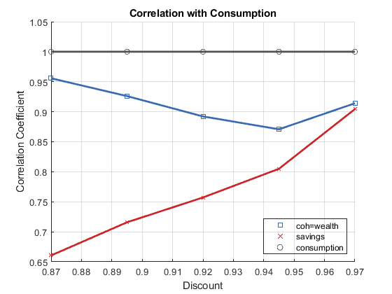 end % snap figure in place if (bl_graph_onebyones) snapnow; else st_img_path = 'C:\Users\fan\CodeDynaAsset\m_fibs\m_ipwkbzr_test\mat\'; st_file_name = ['img1_s' num2str(it_size_type) '_m' num2str(it_pcombi_ctr)]; saveas(gcf, strcat(st_img_path, st_file_name)); end
end
end